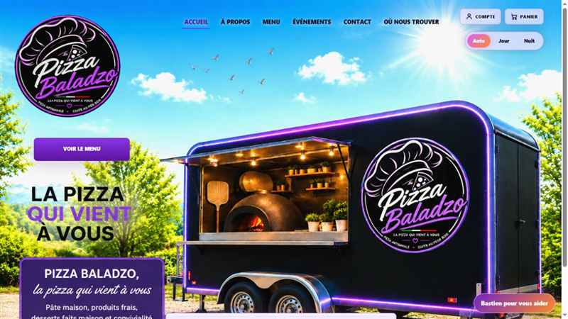
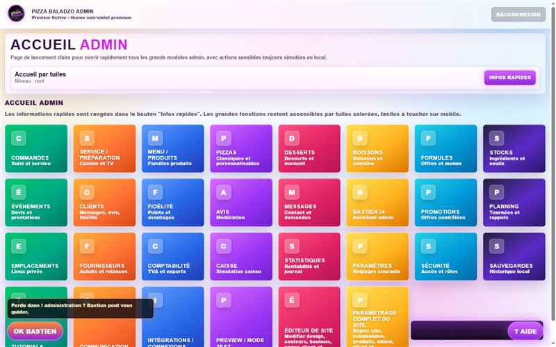

État visuel contrôlé
Les trois sites, réunis dans une seule vue.
Cette page présente les dernières captures publiques assainies du site client, de l’administration et du site de présentation. Les données de statut sont relues automatiquement depuis les fichiers JSON du suivi.
Site client

Administration

Présentation